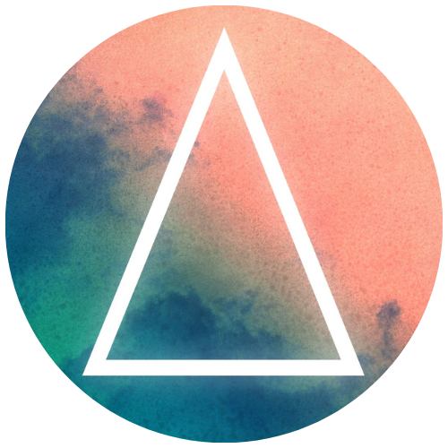

Phase
Phase est une association de passionnés, en place depuis plusieurs années déjà, leur évènement “OPEN BASS” à bord de la péniche Loupika tous les mois, est le RDV pour tout amoureux de Bass Music.
Phase est une association de passionnés, en place depuis plusieurs années déjà, leur évènement “OPEN BASS” à bord de la péniche Loupika tous les mois, est le RDV pour tout amoureux de Bass Music.
Une entité dans son domaine, reconnue dans toute la France, les EZ ont lieu tous les trimestres au Transbordeur Club, avec en tête d’affiche des artistes internationaux. Elles sont organisées par Totaal Rez, organisateur de concert et soirée, qui ont créé également d’autres marque tel que : Dub écho, encore, High-lo, FCKNYE LYON, le bazar, Danse machine 90’ etc.
Physical tool, Association crée par mescud et zuffal, deux artistes drum’n’bass, leur soirée se passe souvent au Loupika.